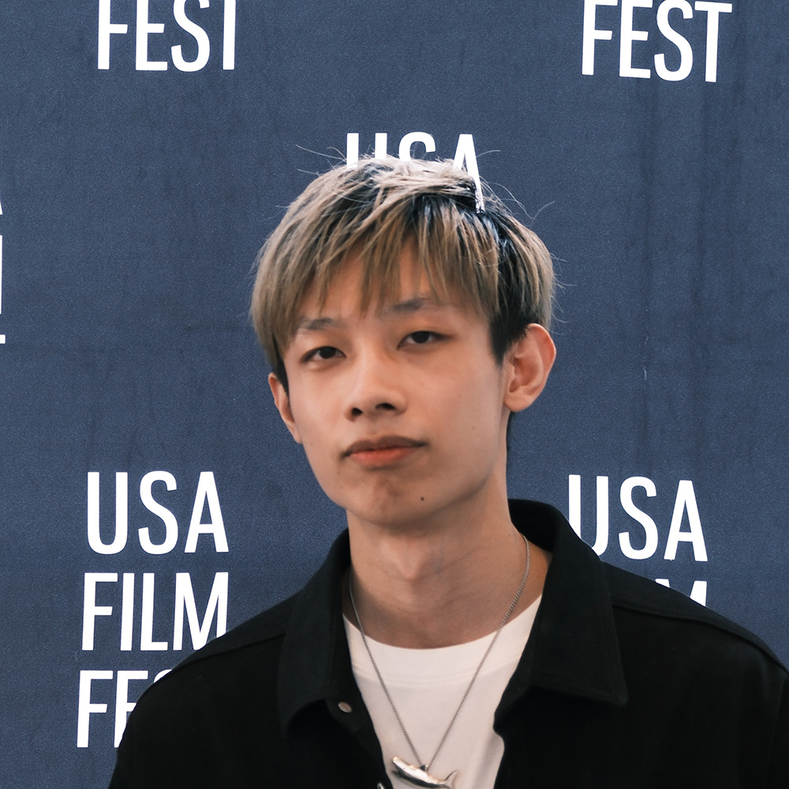
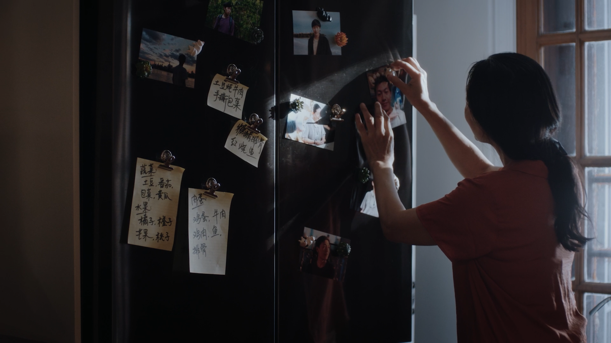

关于我 / About
陈越Steven Chen
生成式 AI 艺术家。
电影人。
我以导演的视角创作影像，用 AI 拓展电影世界。现居洛杉矶，创作涵盖原创故事、品牌影片与后期制作。
Cinema at the core. New possibilities in every frame.
聊聊创作合作
01 / 创作背景
始于电影，
延伸至想象。
Cinema is my starting point.
我将电影制作的思考带入生成式影像：清晰的故事、经过推敲的构图，以及让每个镜头都有意义的剪辑。
我的实践横跨剧情短片、纪录片与商业制作。导演、制片、剪辑、调色与声音工作的经验，构成了我开展 AI 视觉开发的基础。
从《孤》的生活叙事，到《玄天诀》的仙侠世界，我关心人物、情绪与画面之间的关系。传统拍摄与 AI 创作在这里相互补充，让故事从前期开发延伸至最终的视听呈现。
- 南加州大学电影艺术学院
- 电影制作硕士 · 2026 USC School of Cinematic Arts · MFA
- 纽约视觉艺术学院
- 电影学士 School of Visual Arts, New York · BFA
02 / 创作实践
让想法，成为镜头。
真实的表演，想象的世界。
始终关注每一个镜头。
高清待加载
3D 运镜预演
AI 渲染
左右拖动对比 · Drag to compare
AI × 传统电影制作
Grand Theft Art
从 3D 运镜预演到 AI 影像。
拖动分界线，同步查看两种呈现。


03 / 行业合作
让创作，
连接更多可能。
与 AI 平台、电影创作者和品牌开展合作。
Creative connections.
查看 AI 影像- 即梦AI Dreamina AI Seedance
- 创意合作伙伴与官方创作者围绕图像与视频生成，开展 AI 短片、视觉案例与创作者侧产品实践。
- 可灵 AI Kling AI
- 官方精英创作者计划入选官方精英创作者计划，以影视叙事与镜头语言探索角色、场景一致性、动态表现与多镜头衔接。
- 新片场 Shotlab
- 签约创作人围绕 AI 短片、平台内容与创作流程案例开展内容合作。
- Moodio AI Agent
- AI 视频生成顾问CMU 学生主导团队从电影制作与镜头语言出发，参与原型测试、产品反馈与创作工作流设计。
- OpenCreator.io
- 官方创意大使开展多模型 AI 影像创作与流程测试，连接图像生成、视频生成与创意开发。
04 / 作品荣誉
银幕之上，
交流之间。
Films, conversations and recognition.
05 / 联系
洛杉矶 / Los Angeles下一个作品，
我们一起创作。
欢迎聊聊你的影片、品牌项目或创意合作。来信可以附上创作方向、所需环节与时间安排。Tell me about your next film or creative project.